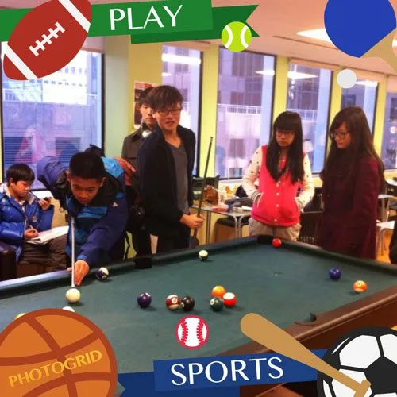

Canadian Overseas Students Frequently Asked Questions
Dear parents and advisors, please read the following in a few minutes. Although the coverage is limited, these are common questions for Chinese students studying abroad. Finally, there are some simple suggestions for your reference. I wish for a successful and successful study abroad! (The following is Canadian Canadian Guardian Company SSC-Canada. Welcome to reprint and share the common living knowledge for overseas students, reduce worry for parents and students, and continue to grow, based on improving self-cultivation and quality.)
[In the survey of common difficulties encountered in studying abroad, the statistical analysis results of the first stop survey of students studying in 2008 showed that language exchange has become the most common difficulty for international students. The common problems for overseas students are mainly due to the difficulties caused by changes in the language and cultural environment. Many students have strong dependence, poor adaptability and ability to take care of themselves, and are not good at making new friends. They also have language barriers. Therefore, they feel alone, lonely, homesick and do not adapt to school teaching in the first few months of their arrival in the country of study abroad. Environment and teaching methods. In addition, the report also shows that the common difficulties faced by Chinese students in overseas colleges and universities include: language barriers account for 51%, accommodation status accounts for 16%, eating habits account for 13%, East and West differences in thinking accounted for 11%, security The problem accounts for 9%.
When talking about overseas students’ language barriers, accommodation, diet and differences in thinking between the East and West, and safety issues, Wang Wei, chief operating officer of Australia Overseas Study Company, said, “If you want to change this situation, you should learn as much as you can before you study abroad. The situation of the city and school you are going to go through is to prepare yourself mentally and verbally. When you arrive at school, you should learn to actively communicate with the students and friends around you and make new friends so that you can quickly get rid of loneliness and loneliness.”]
From: http://liuxue.eastday.com/NewsDetail-3059-0.html
Source: China Youth Daily Editorial: Li Yunchuan

First, life aspects
- No toilet etiquette awareness
- No table ritual awareness
- Do not eat breakfast, delicious overeating; do not like to eat, fasting hungry belly
- Junk food
- Game addiction, night games, daytime gaps
Second, academics:
- Barriers to communication, including teachers, classmates, host families
- Learning alone cannot adapt to collective collaborative learning
- Lack of creative thinking
- Lack of courage to challenge authority
- A small amount of dishonesty is practiced with white lies
Third, social aspects
- Chinese students get together
- Cannot integrate with local students
- Do not bully other students
- Compare
- Inadvertent friends
- Dirty habits
Fourth, physiological aspects
- Cannot bathe and change clothes (including underwear and socks) every day
- Dissatisfied with soil and water, the body shows a variety of immune system disorders, for example, a sudden surge in body weight, out of young beans or increased, hair loss, etc.
Fifth, psychological aspects
- The first row of loneliness
- Lost second
- New environment of fear
The following are the key recommendations of Canadian Canadian Guardian Company SSC-Canada:
Related individuals
- Please take care of your passport, ID, student ID, travel ticket, cell phone, computer, emergency contact information, homestay address, and phone number.
- Pass your passport at home every day. Take a copy of your passport with you.
- Please remember to note: The valid period of the size of the visa! The validity of insurance! Address update.
- To withdraw large sums of cash from banks, you usually need to carry the original passport. The original passport does not need to be carried at any time.
Homestay
- I promise that I will respect the school staff, students, and members of my host family, especially for host families, to protect family items, keep the house tidy and clean, respect the family’s lifestyle habits, and if there is any opinion of the host family, the homestay coordinator, Does not have any economic contact with the host family.
- Network: Do not download large videos in homestay.
- Telephone: You can use your home phone to make local calls at any time, but do not use your home phone to make long-distance calls; try not to call after 10 o’clock in the evening to avoid affecting others’ rest.
- If you have any food or item allergies, please inform your counselor and your host family. For example: peanuts, beans, seafood allergies.
- Three meals a day: The three meals of a Canadian family are very different from Chinese families.
Breakfast is usually milk + cereal; toast + jam + chocolate sauce; coffee/milk
Lunch: sandwiches, fruits, drinks
Dinner: Western style soup, grilled meat and salad.
- The average host family’s dinner time is 6-7PM. If you do not have dinner, please advance your homestay family.
- Toiletries: Please prepare personal toiletries.
- take a shower. First, you can shower at any time to take a shower; Second, please complete in 15 minutes; third, please finish before 11:00 in the evening.
- Curfew Agreement: Return to homestay before 10PM, stay overnight, stay overnight, not stay overnight, no smoking, no alcohol, no cigarettes and alcohol in the homestay family, no heterosexual partner in homestay room, no boarding Family license, any student student is not allowed to visit the family.
- Laundry: The average host family will arrange or wash your laundry. Please put the dirty clothes to the designated place in the family.
- Bathroom habits:
- Shower: Before showering, put the shower curtain in the bathtub. After showering, please clean the bathtub, the floor, etc.
- Toilets: flush afterwards, and keep the toilet quickly. After the boys urinate, please pay attention to the surrounding health of the toilet;
- Wash basin: After washing hands and cleansing, please keep the wash basin clean and dry
- Restaurant etiquette
Meal Please avoid loud; Avoid talking when chewing; Food to share with everyone; Meals please wear neatly and wear socks
- Keep your room tidy and your personal belongings tidy and tidy
- The host family key must be kept.
- The bathroom remains dry and clean
- Do not eat in the bedroom
- Go out and lock the door, turn off the lights, and make sure that you don’t forget to cook on the stove and turn off the stove.
- No student or student is free to call or visit family without permission from homestay and school
- English communication encourages students to create more and more opportunities to communicate with host families in English, for example
- What time is dinner?
- Should I prepare my own lunch?
- When can I do my laundry?
Overseas insurance
- You must have overseas insurance during your studies. If you go to clinic, please bring your original passport and insurance policy.
- If you already have an MSP card in province C, please note the extension time and the required information:
- Full name Three-byte name of the full name on the passport, please note whether there is a space
- Date of Birth Date of Birth
- CareCard number Medical Card Number
- Address Accommodation address
- Phone Number Phone Number
- Mail To: By mail to the following:
BC Medical Services Plan (Health Insurance BC)
PO box 9035 Stn Prov Govt
Victoria, BC V8W 9E3
What is the guardian of an international student?
Study abroad schedule:
- The student chooses the appropriate area and school, fills in the application form and pays an application fee of CAD 500.
- The school issues a “conditional admission notice” and the center is responsible for mailing to parents or studying abroad.
- After the student fully pays all the money, the school issues the “Admission Notice”.
- Center notary “legal guardian documents.”
- The center mailed the “Admission Notice” and “Legal Guardian Document.”
- Students apply for a visa.
- After the visa is successful, the center will pay the guardianship fee.
- After the student purchases the ticket, the notice center, the center arranges to pick up the plane and provides the information of the pick-up person to the parent.
- After the student arrives, the center will report the situation of the student to the parents within 24 hours.
- Before the school starts, the center will take students to the school registration to understand the situation of the school and help students choose courses.
- Within one week after the school starts, the center will send parents the students a class schedule for the current semester.
- From the sixth week to the eighth week of school, the center will first communicate with the teacher at the school and send a communication report to parents.
- After the transcript of the mid-term exam is announced, the center will mail the transcripts to parents.
- Within three months after the school starts, the center will visit the students for the second time to understand the learning situation and send a communication report to parents.
- Within three weeks after the final exam, the center sends the first semester final exam report card to parents.
- At the beginning of the second semester, the center will send the curriculum to parents.
- From the sixth week to the eighth week after the school starts, the center will visit the students for the third time and send a communication report to parents.
- Within three weeks after the mid-term exam, the center sent the test scores to parents.
- Between March and April, the center will help students who continue their studies to renew their VISA.